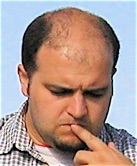
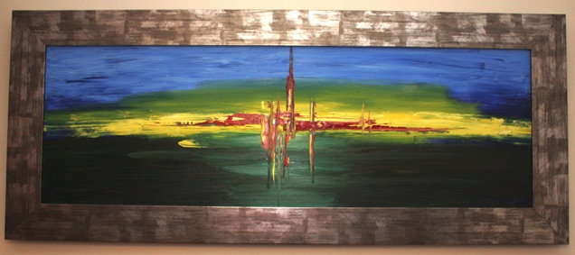
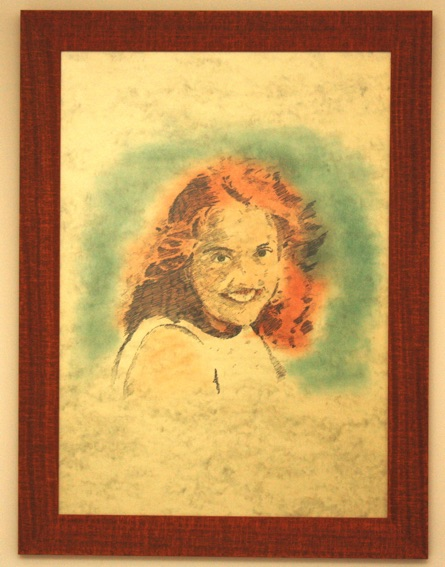
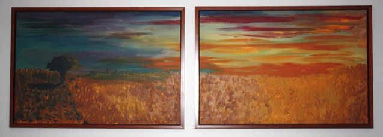
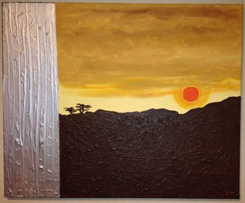
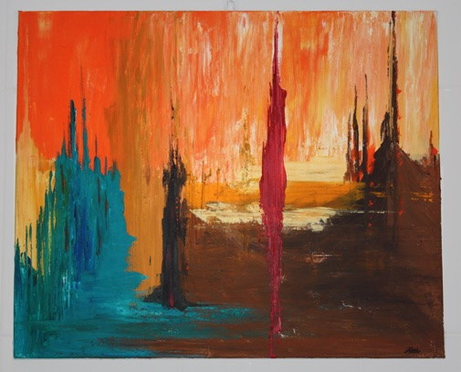
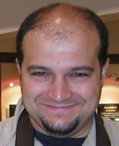
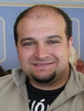

J. C. Gonzalez Personal Web Site
Table of Contents
- Inicio
- Curriculum Vitae
- Artículos
- Pequeños textos, notas, etc.
- Pequeñas presentaciones
- Artículos científicos
- The TEV Energy Spectrum of Markarian 501 Measured with the Stereoscopic Telescope System of HEGRA during 1998 and 1999
- The cosmic electron background in low energy imaging atmospheric Cherenkov telescopes: effect of the geomagnetic field
- Evidence for TeV gamma ray emission from Cassiopeia A
- Search for a TeV gamma-ray halo of Mkn 501
- Reanalysis of the high energy cutoff of the 1997 Mkn 501 TeV energy spectrum
- Monte Carlo Simulations for High Zenith Angles
- Rejection of the Hypothesis That Markarian 501 TEV Photons Are Pure Bose-Einstein Condensates
- The Energy Spectrum of TEV Gamma Rays from the Crab Nebula as Measured by the HEGRA System of Imaging Air Cerenkov Telescopes
- Correlated Intense X-Ray and TEV Activity of Markarian 501 in 1998 June
- On the optimum spacing of stereoscopic imaging atmospheric Cherenkov telescopes
- Optimizing the angular resolution of the HEGRA telescope system to study the emission region of VHE gamma rays in the Crab Nebula
- Comparison Between HEGRA and RXTE ASM Data from Mkn 501
- Energy spectrum and chemical composition of cosmic rays between 0.3 and 10 PeV determined from the cherenkov-light and charged-particle distributions in air showers
- HEGRA search for TeV emission from BL Lacertae objects
- Cherenkov light based measurement of extensive air showers around the knee with the HEGRA experiment
- TeV gamma-ray observations of the Crab and MKN 501 during moonshine and twilight
- The time structure of Cherenkov images generated by TeV gamma-rays and by cosmic rays
- Performance of the stereoscopic system of the HEGRA imaging air Cerenkov telescopes: Monte Carlo simulations and observations
- Measurement of the radial distribution of Cherenkov light generated by TeV gamma-ray air showers
- Observations of MKN 421 during 1997 and 1998 in the energy range above 500 GeV with the HEGRA stereoscopic Cherenkov telescope system
- The Energy Resolution of The MAGIC Telescope
- The temporal characteristics of the TeV gamma -emission from MKN 501 in 1997. II. Results from HEGRA CT1 and CT2
- The time averaged TeV energy spectrum of MKN 501 of the extraordinary 1997 outburst as measured with the stereoscopic Cherenkov telescope system of HEGRA
- Phase-resolved TeV gamma-ray characteristics of the Crab and Geminga pulsars
- The temporal characteristics of the TeV gamma-radiation from MKN 501 in 1997. I. Data from the stereoscopic imaging atmospheric Cherenkov telescope system of HEGRA
- Search for gamma-ray bursts above 20 TeV with the HEGRA AIROBICC Cherenkov array
- First results on the performance of the HEGRA IACT array
- Measurement of the flux, spectrum, and variability of TeV {gamma}-rays from MKN 501 during a state of high activity.
- Monte Carlo Studies for The MAGIC Telescope Project
- Detection of {gamma}-rays above 1.5TeV from MKN 501.
- An optimized method for the reconstruction of the direction of air showers for scintillator arrays
- Detection of gamma rays above 1 TeV from the Crab Nebula by the second HEGRA imaging atmospheric Cherenkov telescope at La Palma
- Search for very high energy {gamma} radiation from the radio bright region DR4 of the SNR G78.2+2.1.
- Detection of VHE {gamma}-rays from MKN 421 with the HEGRA Cherenkov Telescopes.
- Software
- Pintura
- Libros
- Blogs
- Estado
- Acerca de …
Inicio
Bienvenidos
Hola, me llamo José Carlos. Soy astrofísico por la Facultad de Ciencias Físicas de la Universidad Complutense de Madrid. Realicé estudios de doctorado entre 1995 y 1997 en el Grupo de Altas Energías, en el Departamento de Física Atómica, Molecular y Nuclear, y después en el Instituto Max Planck de Física de Munich, en Alemania, donde fui responsable de la simulación y la prueba de concepto del Telescopio MAGIC (Major Advanced Gamma-ray Imaging Cherenkov Telescope); actualmente existen dos de estos telescopios en el Observatorio del Roque de los Muchachos, en la isla de La Palma, en las Islas Canarias.
Llevo trabajando en desarrollo de software desde 1988, donde comencé a la edad de 18 años como autónomo, desarrollando programas de ofimática de gestión de bases de datos, para la empresa IMS Health, dentro del mercado farmacéutico.
He trabajado durante catorce años en la compañía GMV Aerospace and Defence, S.A., donde he estado involucrado en varios proyectos de software crítico, como el sistema EGNOS para la aumentación de GPS en Europa; o el simulador ASTA para el caza de combate Eurofighter; o la capa de control y monitorización de tiempo real, o el sistema de sincronización de relojes y determinación de órbitas, dentro del Sistema Galileo. Desde 2009 hasta 2015 he formado parte del equipo de la División de Sistemas de Ciencia, y en la actualidad de la División de Payload Data Processing, donde he sido jefe de proyecto y he colaborado en proyectos como el procesado, analisis y diseminación de datos de varias misiones de la Agencia Espacial Europea (ESA).
También he pertenecido, desde 2005 hasta 2015, al Comité CMMI de GMV, cuya labor es la de monitorizar y mejorar los procesos de calidad dentro de la empresa. En el ámbito de CMMI, he actuado como evaluador en las campañas para la certificación de GMV como poseedora de CMMI Maturity Level 3 (en 2005), y CMMI Maturity Level 5 (en 2010). En los últimos años formé parte del grupo de CMMI Alta Madurez de GMV.
En la actualidad estoy vinculado a la compañía Telespazio Vega UK, y trabajo en el Centro Europeo de Astronomía Espacial (ESAC) de la ESA. Formo parte del equipo de la misión EUCLID, dentro del sistema de análisis QLA.
Mis intereses son múltiples, aunque mis inclinaciones son claramente hacia ámbitos científicos y tecnológicos.
Me interesa el desarrollo de software de alta criticidad, de gran calidad y rendimiento, los métodos de análisis estadístico, la astrofísica, la física teórica, la topología, y los sistemas complejos y caóticos.
Me interesa también la antropología, la historia de las religiones y corrientes de pensamiento, y la psicología social y cultural. Del mismo modo, todo lo que últimamente se está avanzando acerca del cerebro y la mente llama mi atención.
Yo diría que lo que le mueve es fundamentalmente la necesidad de aprender cosas nuevas.
¿Mis aficiones? La lectura (ciencia ficción, fantasía, pero también ensayos científicos relacionados con la matemática o la física, psicología y antropología), la cocina, el cine y la fotografía. Y últimamente también escribir en alguno de mis blogs o algún tipo de relato (acabo de publicar una pequeña novela de ciencia ficción).
Muchas gracias por visitar esta página web. Aunque, como suele pasar con todas las páginas personales, se encuentra permanentemente en construcción.
Curriculum Vitae
Una visión condensada y alternativa de este Curriculum Vitae puede verse en http://re.vu/jcgonzalez

Estudios Superiores
- 1989-1994
- Licenciado en Física (Astrofísica) por la Universidad Complutense de Madrid.
Especialidad
- Ingeniería de Software
- Software Crítico
- Procesos y Mejora Continua
Idiomas
- Español (lengua materna)
- Inglés (hablado y escrito)
- Alemán (hablado y escrito, conocimiento medio)
Experiencia Profesional
2015-actualidad - Telespazio Vega UK / ESAC
2001–2015 - GMV Aerospace and Defence S.A.
- 2009–2015
- Jefe de Proyecto en la Payload Data Processing Division (Payload Data Processing and Applications Unit)
- Jefe de Proyecto del proyecto Enhanced Online Archive Phase 2 (E-OA Ph2), para la evolución y mejora del Archivo On-line, para la diseminación, publicación y acceso a productos de las misiones del Earth Observation (EO) Payload Data Ground Segment (PDGS) Evolution Program de la Agencia Espacial Europea (ESA).
- Jefe de Proyecto de SMOSCP34CD, para el desarrollo de los Procesadores de Niveles 3 y 4 y de las Herramientas del Centro Experto (en ESAC) de los datos obtenidos por el satélite SMOS, de la Agencia Espacial Europea (ESA).
- Jefe de Proyecto de SPECTRO3D, para el diseño de un sistema de análisis de datos de espectroscopía 3D, conjuntamente con la Universidad Complutense de Madrid.
- Colaboración en el proyecto SAFE, del ESA Earth Observation (EO) Payload Data Ground Systems (PDGS) Evolution Program, para el desarrollo de un estandar de diseminación de datos, dentro del marco del Long-Term Data Preservation Program.
- Colaboración en el proyecto EarthCARE, del ESA Earth Observation (EO) Payload Data Ground Systems (PDGS) Evolution Program.
- 2005–2015
- Miembro del Comité CMMI de GMV, y del Grupo de Trabajo de Alta Madurez para CMMI ML 4 y 5.
- 2009: CMMI® Appraisal Team Member en el Standard CMMI® Appraisal for Process Improvement (SCAMPI), en GMV, S.A. (evaluación de cumplimiento de GMV con el CMMI Maturity Level 4 y 5): como resultado GMV alcanzó CMMI ML 5.
- 2005: CMMI® Appraisal Team Member en el Standard CMMI® Appraisal for Process Improvement (SCAMPI), en GMV, S.A. (evaluación de cumplimiento de GMV con el CMMI Maturity Level 3): como resultado GMV alcanzó CMMI ML 3.
- 2005–2009
- Ingeniero de Proyecto en los Elementos de Galileo OSPF (Orbitography and Synchronisation Processing Facility) e IPF (Integrity Processing Facility), en la División Galileo.
- Miembro del OSPF Real-Time Monitoring & Control System V1B Integration Team.
- Responsable del subsistema OSPF AF ODTS (Orbit Determination and Time Synchronization).
- Responsable de los Interfaces Externos de los Elementos OSPF e IPF en el Segmento de Tierra del Sistema Galileo.
- 2004-2005
- Ingeniero de Proyecto en GMV S.A., dentro del proyecto EGNOS ASQF.
- 2004
- Ingeniero de Proyecto en GMV S.A. (Unidad de Defensa), dentro del proyecto ASTA-Eurofighter, para EADS-CASA, trabajando desplazado en las instalaciones de EADS-Deutschland en Manching, Ingolstadt (Alemania).
- 2003
- Ingeniero de Proyecto en GMV S.A., trabajando desplazado en las instalaciones de EADS-CASA en Getafe, Madrid, en el marco del proyecto Interim Training, para el Eurofighter.
- 2003-2004
- Ingeniero de Proyecto en el marco de proyecto TERESA2 (MSTRUP), para ESA.
- 2003
- Ingeniero de Proyecto en GMV S.A., dentro del proyecto ASTA-Eurofighter, para EADS-CASA.
- 2001-2003
- Ingeniero de Proyecto en el proyecto EGNOS CPF-PS, responsable de la implementación, integración y validación del algoritmo de sincronización de tiempos.
1997-2000 - Max-Planck-Institut für Physik (Munich)
Estudios de doctorado en el diseño, viabilidad y prestaciones del telescopio MAGIC (Major Advanced Gamma-ray Imaging Cerenkov). Responsable de la simulación del telescopio (actualmente existen dos telescopios MAGIC en el Observatorio del Roque de los Muchachos, en La Palma, Islas Canarias).
1995-1996 - Depto. de Física Atómica, Molecular y Nuclear de la Facultad de CC. Físicas, Univ. Computense de Madrid
Becas predoctorales en el marco del proyecto “Contributions to Delphi and HEGRA”.
Profesor ayudante de laboratorio de física.
1988-1990 - I.M.S. Ibérica S.A.
Freelance, Responsable del Depto. de Ofimática, trabajando para I.M.S. Ibérica S.A. (del Dun & Bradstreet Corp., actualmente IMS Health). Desarrollo de aplicaciones para gestión de bases de datos y realización de análisis de mercado e informes de ventas de productos farmaceúticos.
Publicaciones y Contribuciones a Conferencias Internacionales
La lista muestra los artículos y contribuciones más importantes.
- Blanch O., González J.C., Kornmayer H., “Detailed Monte Carlo studies for the MAGIC telescope”, in Proc. «27th International Cosmic-Rays Conference», Hamburg, Ago. 2001.
- Cortina J., González J.C., “The cosmic electron background in low energy imaging atmospheric Cherenkov telescopes: effect of the geomagnetic field”, Astroparticle Physics, 15 (2001) 203-210.
- González J.C., Mirzoyan R., “The Energy Resolution of the MAGIC Telescope”, in D. Kieda, M. Salamon and B. Dingus, eds., Proc. «26th International Cosmic-Rays Conference», Salt-Lake City, vol. 5, pp. 199-202, Ago. 1999.
- González J.C. et al., “Comparison between HEGRA and RXTE ASM data from Mkn 501”, in Proc. of the «VI Workshop Towards a Major Atmospheric Cherenkov Detector», Snowbird, Ago. 1999.
- González J.C. et al., “Monte-Carlo Studies for The MAGIC Telescope Project”, in O.C. De Jager, ed., Proc. of the «IV Workshop Towards a Major Atmospheric Cherenkov Detector», Krüger Nat. Park, pp. 422-432, Ago. 1997.
- González J.C. et al., “Simulation of the MAGIC Telescope”, Monte Carlo analisys chapter in J.A. Barrio et al., «The MAGIC Technical Proposal», Nov. 1997.
Trabajos dirigidos
- “Estudio de cascadas atmosféricas iniciadas por rayos gamma cósmicos a alto ángulo cenital”, por Aitor Ibarra, Trabajo de Investigación Pre-doctoral,
Co-directores: J. C. González & V. Fonseca, Dept. Física Atómica, Molecular y Nuclear, Fac. Ciencias Físicas, Universidad Complutense de Madrid, 1999.
Cursos Impartidos
- Curso de C Avanzado, del 4 al 6 de marzo de 2008 (12h), en GMV Aerospace and Defence, S.A.
- Curso de C Avanzado, del 14 al 16 de junio de 2011 (10h), en GMV Aerospace and Defence, S.A.
- Curso de Estadística Básica, 18 de enero de 2012 (4h), en GMV Aerospace and Defence, S.A.
Charlas y Conferencias
- GMV: Today's Projects for Tomorrow's World, 4 de marzo de 2010, charla a alumnos de doctorado, Sala de Grados, Facultad de Informática, Universidad Complutense de Madrid.
Intereses, aficiones y más
Los intereses de J. C. González son múltiples y variados: desde el desarrollo de software de alta criticidad, de gran calidad y rendimiento, métodos de análisis estadístico, pasando por la astrofísica, la física teórica, la topología, los sistemas complejos y caóticos, hasta la antropología, la historia de las religiones y corrientes de pensamiento, y la psicología social y cultural. Lo que le mueve es fundamentalmente la necesidad de aprender cosas nuevas.
Sus aficiones más destacadas son la lectura (ciencia ficción, fantasía, pero también ensayos científicos relacionados con la matemática o la física, psicología y antropología), la cocina, el cine y la fotografía.
Es creador y editor del blog Ciencia en sí misma (www.jcgonzalez.org/cienciaensimisma), en el que incluye periódicamente noticias de campos científicos diversos, muy especialmente de astrofísica.
Artículos
Pequeños textos, notas, etc.
Estos textos contienen sobre todo algunas de las notas tomadas durante mi período dentro del proyecto MAGIC (ver sección Artículos científicos más abajo). Ninguno tiene valor alguno hoy en día, salvo el sentimental…
- Recommendations on writing self-documented source code, J. C. González, Max-Planck-Institut für Physik, Munich, March 1999 (199903-selfdoc.pdf)
- Notes on the Estimation of the Accidental Trigger Rate due to le Light of Night Sky, J. C. González, Max-Planck-Institut für Physik, Munich, January 2000 (200001-ATR.pdf)
- Notes on the estimation of the contribution of the Light of Night Sky per pixel, J. C. González, Max-Planck-Institut für Physik, Munich, January 2000 (200001-LONS.pdf)
- Notes on the simulation of the response of a Photomultiplier Tube, J. C. González, Max-Planck-Institut für Physik, Munich, January 2000 (200001-QEplain.pdf)
- An abstract view of the development of an Analysis System for The MAGIC Telescope, J. C. González, Max-Planck-Institut für Physik, Munich, February 2000 (200002-anasoft.pdf)
- On the policies for submission of new revisions of source code files, J. C. González, Max-Planck-Institut für Physik, Munich, March 2000 (200003-submission.pdf)
- Notes on the simulation of the Atmospheric Attenuation, J. C. González, Depto. Física Atómica, Facultad CC. Físicas, UCM, Madrid, July 2000 (200007-attenu.pdf)
Pequeñas presentaciones
Del mismo modo, las siguientes presentaciones tuvieron su momento y su razón de ser, aunque ahora tienen escaso valor. No obstante, la última, que no tiene nada que ver con las demás, es bastante curiosa. Trata de cómo con el uso del simple análisis dimensional, el sentido común, y partiendo de unas pocas constantes del Universo, se pueden realizar estimaciones bastante aproximadas de cosas como el orden de magnitud del tamaño de un ser vivo “tipo” en el Cosmos.
- C/C++: The Programming Language, J. C. González, 1st MAGIC Telescope Software Meeting, The Eng, Feb.1999 (199902-c.pdf)
- CVS: Concurrent Versions System, J. C. González, 1st MAGIC Telescope Software Meeting, The Eng, Feb.1999 (199902-cvs.pdf)
- Perl: The Scripting Language, J. C. González, 1st MAGIC Telescope Software Meeting, The Eng, Feb.1999 (199902-perl.pdf)
- Playing wiht the Constants of Nature, J. C. González, Oct.2000 (200310-cn.pdf)
Artículos científicos
Hasta el mismo fin del siglo pasado estuve involucrado en los proyectos HEGRA y MAGIC, dentro del campo de la astrofísica de partículas. Dentro de este período colaboré en la elaboración de los siguientes artículos para revistas y congresos.
The TEV Energy Spectrum of Markarian 501 Measured with the Stereoscopic Telescope System of HEGRA during 1998 and 1999
Aharonian, F.; … González, J.C. et al. …
- Journal: The Astrophysical Journal, Volume 546, Issue 2, pp. 898-902. (ApJ Homepage)
- Publication Date: 01/2001, UCP
- Objects: Individual: Name: Markarian 501, Galaxies: Jets,
- Gamma Rays: Observations
- Abstract Copyright: (c) 2001: The American Astronomical Society
- Bibliographic Code: 2001ApJ…546..898A
During 1997, the BL Lac object Mrk 501 went into an extraordinary state of high X-ray and TeV gamma-ray activity, lasting more than 6 months. In this paper we report on the TeV emission characteristics of the source in the subsequent years of 1998 and 1999 as measured with the stereoscopic Cherenkov telescope system of the High-Energy Gamma-Ray Astronomy (HEGRA; La Palma, Canary Islands). Our observations reveal a 1998-1999 mean emission level at 1 TeV of 1/3 of the flux of the Crab Nebula, a factor of 10 lower than during the year of 1997. A data set of 122 observation hours with the HEGRA telescope system makes it possible to assess for the first time the Mrk 501 TeV energy spectrum for a mean flux level substantially below that of the Crab Nebula with reasonable statistical accuracy. Excluding the data of a strong flare, we find evidence that the 1998-1999 low-flux spectrum is substantially softer (by 0.44+/-0.1stat in spectral index) than the 1997 time-averaged spectrum. The 500 GeV to ~=10 TeV energy spectrum can well be described by a power-law model with exponential cutoff: dN/dE~E-αexp(-E/E0), with α=2.31+/-0.22stat and E0=5.1(+7.8-2.3)stat TeV. Within statistical accuracy, a pure power-law model also gives an acceptable fit to the data: dN/dE~E-Γ, with Γ=2.76+/-0.08stat. After presenting the 1998-1999 TeV characteristics of the source, we discuss the implications of the results.
The cosmic electron background in low energy imaging atmospheric Cherenkov telescopes: effect of the geomagnetic field
Cortina, J.; González, J. C.
- Journal: Astroparticle Physics, Volume 15, Issue 2, p. 203-210. (APh Homepage)
- Publication Date: 04/2001, ELSEVIER
- Abstract Copyright: (c) 2001 Elsevier Science B.V.
- Bibliographic Code: 2001APh….15..203C
A new generation of low threshold imaging atmospheric Cherenkov telescopes (IACTs) may reach /γ-ray energies about 10 GeV with high sensitivities and very large collection areas. At these low energies cosmic electrons significantly contribute to the telescope background and are in principle indistinguishable from /γ-rays. In this paper we estimate the electron background expected for two configurations of the low energy IACT MAGIC. We discuss in particular the reduction of the background caused by the geomagnetic field at different locations on the Earth's surface.
Evidence for TeV gamma ray emission from Cassiopeia A
Aharonian, F.; … González, J.C. et al. …
- Journal: Astronomy and Astrophysics, v.370, p.112-120 (2001) (A&A Homepage)
- Publication Date: 00/2001, A&A
- A&A Keywords: ISM: SUPERNOVA REMNANTS, ISM: INDIVIDUAL OBJECTS: CASSIOPEIA A, COSMIC RAYS, GAMMA RAYS: OBSERVATIONS
- Abstract Copyright: (c) 2001: Astronomy & Astrophysics
- Bibliographic Code: 2001A&A…370..112A
232 hours of data were accumulated from 1997 to 1999, using the HEGRA Stereoscopic Cherenkov Telescope System to observe the supernova remnant Cassiopeia A. TeV gamma -ray emission was detected at the 5 sigma level, and a flux of (5.8 +/- 1.2stat +/- 1.2syst) 10-9 ph m-2 s-1 above 1 TeV was derived. The spectral distribution is consistent with a power law with a differential spectral index of -2.5 +/- 0.4stat +/- 0.1syst between 1 and 10 TeV. As this is the first report of the detection of a TeV gamma -ray source on the ``centi-Crab'' scale, we present the analysis in some detail. Implications for the acceleration of cosmic rays depend on the details of the source modeling. We discuss some important aspects in this paper.
Search for a TeV gamma-ray halo of Mkn 501
Aharonian, F. A.; … González, J.C. et al. …
- Journal: Astronomy and Astrophysics, v.366, p.746-751 (2001) (A&A Homepage)
- Publication Date: 02/2001, A&A
- A&A Keywords: GALAXIES: BL LACERTAE OBJECTS: INDIVIDUAL: MKN 501,
- GAMMA RAYS: OBSERVATIONS
- Abstract Copyright: (c) 2001: Astronomy & Astrophysics
- Bibliographic Code: 2001A&A…366..746A
For distant extragalactic sources of gamma-rays in the PeV (1015 eV) energy range, interactions of the gamma rays with intergalactic diffuse radiation fields will initiate a pair cascade. Depending on the magnetic fields in the vicinity of the source, the cascade can either result in an isotropic halo around an initially beamed source, or remain more or less collimated. Data recorded by the HEGRA system of imaging atmospheric Cherenkov telescopes are used to derive limits on the halo flux from the AGN Mrk 501. This is achieved by comparing the angular distribution of TeV gamma-rays during the 1997 burst phase - where direct photons should dominate - with the distribution during the 1998/99 quiescent state, where a steady-state halo contribution should be most pronounced. The results depend on the assumptions concerning the angular distribution of the halo; limits on the halo flux within 0.5o to 1o from the source range between 0.1% and 1% of the peak burst flux.
Reanalysis of the high energy cutoff of the 1997 Mkn 501 TeV energy spectrum
Aharonian, F. A.; … González, J.C. et al. …
- Journal: Astronomy and Astrophysics, v.366, p.62-67 (2001) (A&A Homepage)
- Publication Date: 01/2001, A&A
- A&A Keywords: GALAXIES: BL LACERTAE OBJECTS: INDIVIDUAL: MKN 501,
- GAMMA-RAYS: OBSERVATIONS
- Abstract Copyright: (c) 2001: Astronomy & Astrophysics
- Bibliographic Code: 2001A&A…366…62A
Data taken with the HEGRA system of imaging atmospheric Cherenkov telescopes during the 1997 flares of Markarian 501 (Mkn 501) are reanalyzed using an algorithm providing improved energy resolution. A resolution of 10% to 12% is obtained by accounting for the variation of the Cherenkov light yield with the height of the shower maximum in the atmosphere. The improved energy resolution is particularly relevant for the study of the high-energy cutoff in the spectrum, which might be caused by interactions with the intergalactic infrared background radiation. The reanalysis presented here confirms the results obtained in the previous analysis, but hints a steeper slope of the spectrum in the region around 20 TeV.
Monte Carlo Simulations for High Zenith Angles
Ibarra, A.; González, J. C.; Cortina, J.; Barrio, J. A.; Fonseca, V.
- Journal: GeV-TeV Gamma Ray Astrophysics Workshop : towards a major atmospheric Cherenkov detector VI, Snowbird, Utah, 13-16 August 1999. Edited by editors, Brenda L. Dingus, Michael H. Salamon, and David B. Kieda. Melville, N.Y. : AIP, 2000. AIP Conference Proceedings, Vol. 515., p.348
- Publication Date: 00/2000, ADS
- Bibliographic Code: 2000gtgr.conf..348I
Not Available
Rejection of the Hypothesis That Markarian 501 TEV Photons Are Pure Bose-Einstein Condensates
Aharonian, F.; … González, J.C. et al. …
- Journal: The Astrophysical Journal, Volume 543, Issue 1, pp. L39-L42. (ApJ Homepage)
- Publication Date: 11/2000, UCP
- Objects: Individual: Name: Markarian 501, Cosmology: Diffuse Radiation, Gamma Rays: Observations, Galaxies: Intergalactic Medium
- Abstract Copyright: (c) 2000: The American Astronomical Society
- Bibliographic Code: 2000ApJ…543L..39A
The energy spectrum of the blazar-type galaxy Markarian 501 (Mrk 501), as measured by the High-Energy Gamma-Ray Astronomy (HEGRA) air Cerenkov telescopes, extends beyond 16 TeV and constitutes the most energetic photons observed from an extragalactic object. A fraction of the emitted spectrum is possibly absorbed in interactions with low-energy photons of the diffuse extragalactic infrared radiation, which in turn offers the unique possibility to measure the diffuse infrared radiation density by exact TeV spectroscopy. The upper limit on the density of the extragalactic infrared radiation derived from the TeV observations imposes constraints on models of galaxy formation and stellar evolution. One of the recently published ideas to overcome severe absorption of TeV photons is based on the assumption that sources like Mrk 501 could produce Bose-Einstein condensates of coherent photons. The condensates would have a higher survival probability during the transport in the diffuse radiation field and could mimic TeV air shower events. The powerful stereoscopic technique of the HEGRA air Cerenkov telescopes allows us to test this hypothesis by reconstructing the penetration depths of TeV air shower events: air showers initiated by Bose-Einstein condensates are expected to reach the maximum of shower development in the atmosphere earlier than single photon events. By comparing the energy-dependent penetration depths of TeV photons from Mrk 501 with those from the TeV standard-candle Crab Nebula and simulated air shower events, we can reject the hypothesis that TeV photons from Mrk 501 are pure Bose-Einstein condensates.
The Energy Spectrum of TEV Gamma Rays from the Crab Nebula as Measured by the HEGRA System of Imaging Air Cerenkov Telescopes
Aharonian, F. A.; … González, J.C. et al. …
- Journal: The Astrophysical Journal, Volume 539, Issue 1, pp. 317-324. (ApJ Homepage)
- Publication Date: 08/2000, UCP
- ApJ Keywords: Gamma Rays: Observations, Radiation Mechanisms:
- Nonthermal, supernovae: individual (Crab Nebula),
- ISM: Supernova Remnants
- Abstract Copyright: (c) 2000: The American Astronomical Society
- Bibliographic Code: 2000ApJ…539..317A
The Crab Nebula has been observed by the HEGRA (High-Energy Gamma-Ray Astronomy) stereoscopic system of imaging air Cerenkov telescopes (IACTs) for a total of ~200 hr during two observational campaigns: from 1997 September to 1998 March and from 1998 August to 1999 April. The recent detailed studies of system performance give an energy threshold and an energy resolution for γ-rays of 500 GeV and ~18%, respectively. The Crab energy spectrum was measured with the HEGRA IACT system in a very broad energy range up to 20 TeV, using observations at zenith angles up to 65°. The Crab data can be fitted in the energy range from 1 to 20 TeV by a simple power law, which yields dJγ/dE=(2.79+/-0.02+/- 0.5)×10-7(E/1 TeV)-2.59+/-0.03+/-0.05 photons m-2 s-1 TeV-1. The Crab Nebula energy spectrum, as measured with the HEGRA IACT system, agrees within 15% in the absolute scale and within 0.1 units in the power-law index with the latest measurements by the Whipple, CANGAROO, and CAT groups, consistent within the statistical and systematic errors quoted by the experiments. The pure power-law spectrum of TeV γ-rays from the Crab Nebula constrains the physics parameters of the nebula environment as well as the models of photon emission.
Correlated Intense X-Ray and TEV Activity of Markarian 501 in 1998 June
Sambruna, R. M.; … González, J.C. et al. …
- Journal: The Astrophysical Journal, Volume 538, Issue 1, pp. 127-133. (ApJ Homepage)
- Publication Date: 07/2000, UCP
- ApJ Keywords: BL Lacertae objects: individual (Markarian 501),
- Galaxies: Jets, Gamma Rays: Observations, Radiation
- Mechanisms: Nonthermal, X-Rays: Galaxies
- Abstract Copyright: (c) 2000: The American Astronomical Society
- Bibliographic Code: 2000ApJ…538..127S
We present exactly simultaneous X-ray and TeV monitoring with RXTE and HEGRA of the TeV blazar Mrk 501 during 15 days in 1998 June. After an initial period of very low flux at both wavelengths, the source underwent a remarkable flare in the TeV and X-ray energy bands, lasting for about 6 days and with a larger amplitude at TeV energies than in the X-ray band. At the peak of the TeV flare, rapid TeV flux variability on subhour timescales is found. Large spectral variations are observed at X-rays, with the 3-20 keV photon index of a pure power-law continuum flattening from Γ=2.3 to Γ=1.8 on a timescale of 2-3 days. This implies that during the maximum of the TeV activity the synchrotron peak shifted to energies >~50 keV, a behavior similar to that observed during the longer lasting, more intense flare in 1997 April. The TeV spectrum during the flare is described by a power law with photon index Γ=1.9 and an exponential cutoff at ~4 TeV; an indication for spectral softening during the flare decay is observed in the TeV hardness ratios. Our results generally support a scenario in which the TeV photons are emitted via inverse Compton scattering of ambient seed photons by the same electron population responsible for the synchrotron X-rays. The simultaneous spectral energy distributions can be fit with a one-zone synchrotron self-Compton model assuming a substantial increase of the magnetic field and the electron energy by factors of 3 and 10, respectively.
On the optimum spacing of stereoscopic imaging atmospheric Cherenkov telescopes
Hofmann, W.; … González, J.C. et al. …
- Journal: Astroparticle Physics, Volume 13, Issue 4, p. 253-258. (APh Homepage)
- Publication Date: 07/2000, ELSEVIER
- Abstract Copyright: (c) 2000 Elsevier Science B.V.
- Bibliographic Code: 2000APh….13..253H
For stereoscopic systems of imaging atmospheric Cherenkov telescopes a key parameter to optimize the sensitivity for VHE /γ-ray point sources is the intertelescope spacing. Using pairs of telescopes of the HEGRA IACT system, the sensitivity of two-telescope stereo IACT systems is studied as a function of the telescope spacing, ranging from 70 to 140 m. Data taken during the 1997 outburst of Mrk 501 are used to evaluate both the detection rates before cuts, and the sensitivity for weak signals after cuts to optimize the significance of signals. Detection rates decrease by about 1/3 between the minimum and maximum spacings. The significance of signals is essentially independent of distance in the range investigated.
Optimizing the angular resolution of the HEGRA telescope system to study the emission region of VHE gamma rays in the Crab Nebula
Aharonian, F. A.; … González, J.C. et al. …
- Journal: Astronomy and Astrophysics, v.361, p.1073-1078 (2000) (A&A Homepage)
- Publication Date: 09/2000, A&A
- A&A Keywords: GAMMA RAYS: OBSERVATIONS, ISM: INDIVIDUAL OBJECTS: CRAB NEBULA, ISM: SUPERNOVA REMNANTS
- Abstract Copyright: (c) 2000: Astronomy & Astrophysics
- Bibliographic Code: 2000A&A…361.1073A
The HEGRA system of imaging atmospheric Cherenkov telescopes provides for specially selected classes of events an angular resolution of better than 3'. By comparing the measured angular distribution of TeV gamma rays from the Crab Nebula with the distribution expected on the basis of Monte Carlo simulations, and with measurements of gamma rays from the point source Mrk 501, we conclude that the rms size of the VHE gamma-ray emission region in the Crab Nebula is less than 1.5'.
Comparison Between HEGRA and RXTE ASM Data from Mkn 501
González, J. C.; Kranich, D.
- Journal: GeV-TeV Gamma Ray Astrophysics Workshop : towards a major atmospheric Cherenkov detector VI, Snowbird, Utah, 13-16 August 1999. Edited by editors, Brenda L. Dingus, Michael H. Salamon, and David B. Kieda. Melville, N.Y. : AIP, 2000. AIP Conference Proceedings, Vol. 515., p.124
- Publication Date: 00/2000, ADS
- Bibliographic Code: 2000gtgr.conf..124G
Not Available
Energy spectrum and chemical composition of cosmic rays between 0.3 and 10 PeV determined from the cherenkov-light and charged-particle distributions in air showers
Arqueros, F.; … González, J.C. et al. …
- Journal: Astronomy and Astrophysics, v.359, p.682-694 (2000) (A&A Homepage)
- Publication Date: 07/2000, A&A
- A&A Keywords: ISM: COSMIC RAYS
- Abstract Copyright: (c) 2000: Astronomy & Astrophysics
- Bibliographic Code: 2000A&A…359..682H
Measurements of the lateral distribution of Cherenkov photons with the wide-angle atmospheric Cherenkov light detector array AIROBICC and of the charged particle lateral distribution with the scintillator matrix of the HEGRA air-shower detector complex in air showers are reported. They are used in conjunction to determine the energy spectrum and coarse chemical composition of charged cosmic rays in the energy interval from 0.3 PeV to 10 PeV. With the atmospheric shower-front sampling technique these detectors measure the electromagnetic component of an extensive air shower via the lateral density distribution of the shower particles and of the Cherenkov photons. The data are compared with events generated with the CORSIKA program package with the QGSJET hadronic-event generator. Consistency checks performed with primary energy-reconstruction methods based on different shower observables indicate satisfactory agreement between these extensive air shower simulations and the experimental data. This permits to derive results concerning the energy spectrum and composition of charged cosmic rays. The energy spectrum features a so called ``knee'' at an energy of Eknee=3.98+4.66-0.83 (stat) +/- 0.53 (syst) PeV. Power law fits to the differential energy spectrum yield indices of -2.72+0.02-0.03 (stat) +/- 0.07 (syst) below and -3.22+0.47-0.59 (stat) +/- 0.08 (syst) above the knee. The best-fit elongation rate for the whole energy range is determined to 78.3 +/- 1.0 (stat) +/- 6.2 (syst) g/cm2. At the highest energies it seems to decrease slightly. The best-fit fraction of light nuclei decreases from 37 +28-21% (combined statistical and systematic) to 8 +32-8% (combined statistical and systematic) \ in the energy range discussed here. A detailed study of the systematic errors reveals that a non-changing composition cannot be excluded.
HEGRA search for TeV emission from BL Lacertae objects
Aharonian, F. A.; … González, J.C. et al. …
- Journal: Astronomy and Astrophysics, v.353, p.847-852 (2000) (A&A Homepage)
- Publication Date: 01/2000, A&A
- A&A Keywords: GALAXIES: BL LACERTAE OBJECTS: GENERAL, GALAXIES: BL
- LACERTAE OBJECTS: INDIVIDUAL: 1 ES 2344+51.4,
- GALAXIES: BL LACERTAE OBJECTS: INDIVIDUAL: BL LAC,
- GAMMA RAYS: OBSERVATIONS
- Abstract Copyright: (c) 2000: Astronomy & Astrophysics
- Bibliographic Code: 2000A&A…353..847A
The HEGRA system of four Imaging Atmospheric Cherenkov Telescopes (IACTs) has been used to extensively observe extragalactic objects. In this paper we describe the search for TeV emission from nine very promising potential TeV sources, namely eight ``high frequency'' BL Lac objects (HBLs), and the object ``BL Lacertae'' itself. These objects were observed during 1997 and 1998 seasons, with total integration times ranging between one and fifteen hours. No evidence for emission was found from any of these objects and the upper limits on the integral energy flux above ~ 750 GeV are on the level of a few times 10-12 erg cm-2 s-1. For the two objects BL Lacertae and 1ES 2344+51.4, we discuss the astrophysical implications of the TeV flux upper limit, using also information from the X-ray and gamma -ray bands as measured with the All Sky Monitor (ASM) of RXTE (1.3-12.0 keV) and with EGRET (30 MeV - 20 GeV).
Cherenkov light based measurement of extensive air showers around the knee with the HEGRA experiment
Aharonian, F.; … González, J.C. et al. …
- Journal: Nuclear Physics B Proceedings Supplements, Volume 75, Issue 1-2, p. 244-247.
- Publication Date: 03/1999, ELSEVIER
- Abstract Copyright: (c) 1999 Elsevier Science B.V. All rights reserved.
- Bibliographic Code: 1999NuPhS..75..244A
Electronic Article Available from Elsevier Science.
TeV gamma-ray observations of the Crab and MKN 501 during moonshine and twilight
Kranich, D.; … González, J.C. et al. …
- Journal: Astroparticle Physics, Volume 12, Issue 1-2, p. 65-74. (APh Homepage)
- Publication Date: 10/1999, ELSEVIER
- Abstract Copyright: (c) 1999 Elsevier Science B.V. All rights reserved.
- Bibliographic Code: 1999APh….12…65K
TeV gamma-ray signals from the Crab Nebula and Mkn 501 were detected with the HEGRA CT1 imaging Cerenkov telescope during periods when the moon was shining and during twilight. This was accomplished by lowering the high voltage supply of the photomultipliers in fixed steps up to 13%. No other adjustments were made and no filters were used. Laser runs could not establish any nonlinearity in the gain of the individual pixels, and the trigger rate was uniform over the whole camera. The energy threshold was increased by up to a factor of two, depending on the amount of HV reduction. In a series of observations lasting 11.7 hours, a signal with a 3.4sigma significance was detected from the Crab. During the 1997 multiple flare episode of Mkn 501 a 26sigma combined excess was recorded during 134 hours of observations under various moonshine/twilight conditions. The results show that this technique can easily be adapted to increase the exposure of a source, which is important for sources showing rapid time variability such as AGNs or GRBs. Observations can be made up to ~20∘ angular separation from the moon and until the moon is 85% illuminated (ten to eleven days before and after new moon), as well as during 20 to 40 minutes during twilight, before the commencement of astronomical darkness.
The time structure of Cherenkov images generated by TeV gamma-rays and by cosmic rays
Heß, M.; … González, J.C. et al. …
- Journal: Astroparticle Physics, Volume 11, Issue 3, p. 363-377. (APh Homepage)
- Publication Date: 07/1999, ELSEVIER
- Abstract Copyright: (c) 1999 Elsevier Science B.V. All rights reserved.
- Bibliographic Code: 1999APh….11..363H
The time profiles of Cherenkov images of cosmic-ray showers and of gamma-rays showers are investigated, using data gathered with the HEGRA system of imaging atmospheric Cherenkov telescopes during the 1997 outbursts of Mrk 501. Photon arrival times are shown to vary across the shower images. The dominant feature is a time gradient along the major axis of the images. The gradient varies with the distance between the telescope and the shower core, and is maximal for large distances. The time profiles of cosmic-ray showers and of gamma-ray showers differ in a characteristic fashion. The main features of the time profiles can be understood in terms of simple geometrical models. Use of the timing information towards improved shower reconstruction and cosmic-ray suppression is discussed.
Performance of the stereoscopic system of the HEGRA imaging air Cerenkov telescopes: Monte Carlo simulations and observations
Konopelko, A.; … González, J.C. et al. …
- Journal: Astroparticle Physics, Volume 10, Issue 4, p. 275-289. (APh Homepage)
- Publication Date: 05/1999, ELSEVIER
- Abstract Copyright: (c) 1999 Elsevier Science B.V. All rights reserved.
- Bibliographic Code: 1999APh….10..275H
Based on the Monte Carlo simulations we have studied the performance of the HEGRA system of imaging air Cerenkov telescopes (IACTs) in its present configuration of 4 IACTs as well as in its future final configuration of 5 IACTs. Here we present the results on the basic characteristics of the IACT system which are used in the standard data analysis procedure, i.e., the collection areas, the detection rates, the angular resolution, the energy resolution, and the gamma/hadron-separation efficiency. By comparing several key Monte Carlo predictions with experimental results it is possible to check the accuracy of the simulations. The Monte Carlo results concerning hadron-nuclear showers are tested with the recorded cosmic ray events and the results concerning photon-induced showers are tested with a large data sample of gamma-rays observed from BL Lac object Mkn 501 during its high flaring activity in 1997. Summarizing the simulations and current observations we give the basic recommendations of using the instrument and the major values of its sensitivity.
Measurement of the radial distribution of Cherenkov light generated by TeV gamma-ray air showers
Aharonian, F. A.; … González, J.C. et al. …
- Journal: Astroparticle Physics, Volume 10, Issue 1, p. 21-29. (APh Homepage)
- Publication Date: 01/1999, ELSEVIER
- Abstract Copyright: (c) 1998 Elsevier Science B.V. All rights reserved.
- Bibliographic Code: 1999APh….10…21H
Using air showers induced by TeV gamma-rays from Mrk 501, the radial distribution of Cherenkov light is investigated. The shower geometry is reconstructed from the stereoscopic shower images obtained with the telescopes of the HEGRA IACT system. With the core position known to better than 10 m, the light yield as a function of the distance to the shower axis is derived by comparing event-by-event the image intensities measured in the different telescopes. We observe a change in the shape of the light pool with zenith angle, an a slow variation with shower energy. Data are well reproduced by Monte Carlo air shower simulations.
Observations of MKN 421 during 1997 and 1998 in the energy range above 500 GeV with the HEGRA stereoscopic Cherenkov telescope system
Aharonian, F. A.; … González, J.C. et al. …
- Journal: Astronomy and Astrophysics, v.350, p.757-764 (1999) (A&A Homepage)
- Publication Date: 10/1999, A&A
- A&A Keywords: GALAXIES: BL LACERTAE OBJECTS: INDIVIDUAL: MKN 421,
- GAMMA RAYS: OBSERVATIONS
- Abstract Copyright: (c) 1999: Astronomy & Astrophysics
- Bibliographic Code: 1999A&A…350..757A
Since its commissioning in fall 1996, the stereoscopic system of Imaging Atmospheric Cherenkov Telescopes (IACTs) of HEGRA, with an energy flux sensitivity nu Fnu at 1 TeV of 10(-11) erg cm(-2} s({-1)) for one hour of observation time, has been used to monitor the BL Lac object Mkn 421 on a regular basis. In this paper, we report detailed temporal and spectral information about the TeV characteristics of Mkn 421 in 1997 and 1998. We study the light curve, the shortest time scales of flux variability, the differential spectra on a diurnal basis for several days with good gamma -ray statistics, and the time-averaged energy spectrum. Special emphasis is put on presenting the data taken during the world-wide April 1997 multiwavelength campaign.
The Energy Resolution of The MAGIC Telescope
J.C. González et al.
- Publication Date: Contributions to the XXVI International Cosmic Rays Conference, Salt Lake City (Aug. 1999)
In the field of gamma-rays Astrophysics in the GeV–TeV energy domain, the understanding of spectra of detected gamma rays is necessary in developing models for acceleration, emission, absorption and propagation of very high energy particles in their sources and in space. Therefore, high precision in the measurement of the energy of observed gammas is important. On the example of the 17 m ø MAGIC telescope, we study in this paper the energy resolution of an imaging Cherenkov telescope operating in stand-alone mode in the GeV-TeV energy range.
The temporal characteristics of the TeV gamma -emission from MKN 501 in 1997. II. Results from HEGRA CT1 and CT2
Aharonian, F.; … González, J.C. et al. …
- Journal: Astronomy and Astrophysics, v.349, p.29-44 (1999) (A&A Homepage)
- Publication Date: 09/1999, A&A
- A&A Keywords: GAMMA RAYS: OBSERVATIONS, GALAXIES: BL LACERTAE
- OBJECTS: INDIVIDUAL: MKN 501
- Abstract Copyright: (c) 1999: Astronomy & Astrophysics
- Bibliographic Code: 1999A&A…349…29A
We present the results on the TeV gamma emission from Mkn 501 in 1997 obtained with the stand-alone Cherenkov telescopes CT1 and CT2 (threshold >= 1.2 and >= 1.0 resp.) of the HEGRA collaboration. The CT1 lightcurve has the most complete coverage of all TeV observations of Mkn 501 in 1997 due to the additional observations made under the presence of moonlight. CT2 - at the time of these observations a second generation Cherenkov telescope with relatively low imaging resolution - is a well tested instrument and its 85 hours of observational data on Mkn 501 in 1997 are useful for consistency checks and provide some additional daily data points. The Mkn 501 lightcurve data show significant correlation with the RXTE ASM X-ray data consistent with no time-lag. The spectral analysis shows a steepening spectrum extending beyond 10 TeV. No change of the spectral slope with the variation of the intensity was found. The results presented here are consistent with the results from the HEGRA Cherenkov telescope system presented in part I of this paper.
The time averaged TeV energy spectrum of MKN 501 of the extraordinary 1997 outburst as measured with the stereoscopic Cherenkov telescope system of HEGRA
Aharonian, F. A.; … González, J.C. et al. …
- Journal: Astronomy and Astrophysics, v.349, p.11-28 (1999) (A&A Homepage)
- Publication Date: 09/1999, A&A
- A&A Keywords: GALAXIES: BL LACERTAE OBJECTS: INDIVIDUAL: MKN 501,
- GAMMA RAYS: OBSERVATIONS
- Abstract Copyright: (c) 1999: Astronomy & Astrophysics
- Bibliographic Code: 1999A&A…349…11A
During the several months of the outburst of Mkn 501 in 1997 the source has been monitored in TeV gamma -ray s with the HEGRA stereoscopic system of imaging atmospheric Cherenkov telescopes. Quite remarkably it turned out that the shapes of the daily gamma -ray energy spectra remained essentially stable throughout the entire state of high activity despite dramatic flux variations during this period. The derivation of a long term time-averaged energy spectrum, based on more than 38,000 detected TeV photons, is therefore physically meaningful. The unprecedented gamma -ray statistics combined with the 20% energy resolution of the instrument resulted in the first detection of gamma -rays from an extragalactic source well beyond 10 TeV, and the first high accuracy measurement of an exponential cutoff in the energy region above 5 TeV deeply into the exponential regime. From 500 GeV to 24 TeV the differential photon spectrum is well approximated by a power-law with an exponential cutoff: d N/d E=N0 (E/1 TeV)(-alpha ) exp {(-E/E0)}, with N0=(10.8 +/-0.2stat +/-2.1sys) * 10(-11) cm(-2) s(-1) TeV(-1) , alpha =1.92 +/-0.03stat +/-0.20sys, and E0=(6.2 +/-0.4stat (-1.5 +2.9)sys) TeV. We summarize the methods for the evaluation of the energy spectrum in a broad dynamical range which covers almost two energy decades, and study in detail the principal sources of systematic errors. We also discuss several important astrophysical implications of the observed result concerning the production and absorption mechanisms of gamma -ray s in the emitting jet and the modifications of the initial spectrum of TeV radiation due to its interaction with the diffuse extragalactic background radiation.
Phase-resolved TeV gamma-ray characteristics of the Crab and Geminga pulsars
Aharonian, F.; … González, J.C. et al. …
- Journal: Astronomy and Astrophysics, v.346, p.913-921 (1999) (A&A Homepage)
- Publication Date: 06/1999, A&A
- A&A Keywords: STARS: PULSARS: INDIVIDUAL: CRAB, STARS: PULSARS:
- INDIVIDUAL: GEMINGA, GAMMA RAYS: OBSERVATIONS
- Abstract Copyright: (c) 1999: Astronomy & Astrophysics
- Bibliographic Code: 1999A&A…346..913A
The Crab and Geminga pulsars were observed with the HEGRA stereoscopic IACT-System. A search for phase-resolved time structure of TeV gamma emission was carried out for both pulsars. No evidence for pulsed emission was observed. Geminga shows up as a TeV quiet object in our data. Upper limits were derived in units of the observed DC TeV Crab flux. The 3sigma upper limit on DC TeV emission of Geminga is 13.0% of the Crab flux. Upper limits on pulsed emission were derived for the phase intervals which revealed pulsed emission in the EGRET 30 MeV - 10 GeV data. The 3sigma upper limits on pulsed emission in these phase intervals are <2.3% and <7.2% of the Crab DC flux for the Crab and Geminga pulsars, respectively.
The temporal characteristics of the TeV gamma-radiation from MKN 501 in 1997. I. Data from the stereoscopic imaging atmospheric Cherenkov telescope system of HEGRA
Aharonian, F. A.; … González, J.C. et al. …
- Journal: Astronomy and Astrophysics, v.342, p.69-86 (1999) (A&A Homepage)
- Publication Date: 02/1999, A&A
- A&A Keywords: GAMMA RAYS: OBSERVATIONS, GALAXIES: BL LACERTAE
- OBJECTS: INDIVIDUAL: MKN 501
- Abstract Copyright: (c) 1999: Astronomy & Astrophysics
- Bibliographic Code: 1999A&A…342…69A
During 1997, the BL Lac Object Mkn 501 was the brightest known object in the TeV gamma-ray sky. The emission was characterized by dramatic variations in intensity with a mean flux exceeding by a factor of three the steady gamma-ray flux of the Crab Nebula. The stereoscopic HEGRA system of 4 Imaging Atmospheric Cherenkov Telescopes, with an energy threshold of about 500 GeV, an angular resolution of 0.1(deg) , an energy resolution of 20%, and a flux sensitivity nu Fnu at 1 TeV of 10(-11) ergs/cm(2) sec =~ 1/4 Crab for 1 hour of observation time (S/sqrt {B}=5sigma ), has been used in 1997 for a comprehensive study of the spectral and temporal characteristics of the TeV gamma-ray emission from Mkn 501 on time scales of several hours or less. In this paper (Part I) the gamma-ray fluxes and spectra on a diurnal basis during the period March to October 1997 are presented. Furthermore, the correlation of the TeV emission with the flux measured by the RXTE All Sky Monitor in the energy range from 2 to 12 keV are studied. Finally the implications of these results on the physics of relativistic jets in BL Lac objects are briefly discussed. The companion paper (Part II) describes the results from the stand alone telescopes CT1 and CT2.
Search for gamma-ray bursts above 20 TeV with the HEGRA AIROBICC Cherenkov array
Padilla, L.; … González, J.C. et al. …
- Journal: Astronomy and Astrophysics, v.337, p.43-50 (1998) (A&A Homepage)
- Publication Date: 09/1998, A&A
- A&A Keywords: GAMMA RAYS: BURSTS, ISM: COSMIC RAYS
- Abstract Copyright: (c) 1998: Astronomy & Astrophysics
- Bibliographic Code: 1998A&A…337…43P
A search for gamma-ray bursts (GRBs) above 20 TeV within the field of view (1 sr) of the HEGRA AIROBICC Cherenkov array (29(deg) N, 18(deg) W, 2200 m a.s.l.) has been performed using data taken between March 1992 and March 1993. The search is based on an all-sky survey using four time scales, 10 seconds, 1 minute, 4 minutes and 1 hour. No evidence for TeV-emission has been found for the data sample. Flux upper limits are given. A special analysis has been performed for GRBs detected by BATSE and WATCH. Two partially and two fully contained GRBs in our field of view (FOV) were studied. For GRB 920925c which was fully contained in our FOV, the most significant excess has a probability of 7.7* 10(-8) (corresponding to 5.4sigma ) of being caused by a background fluctuation. Correcting this probability with the appropriate trial factor, yields a 99.7% confidence level (CL) for this excess to be related to the GRB (corresponding to 2.7sigma ). This result is discussed within the framework of the WATCH detection.
First results on the performance of the HEGRA IACT array
Daum, A.; … González, J.C. et al. …
- Journal: ASTROPARTICLE PHYSICS, Volume 8, Issue 1-2, p. 1-11. (APh Homepage)
- Publication Date: 12/1997, ELSEVIER
- Abstract Copyright: (c) 1998 Elsevier Science B.V. All rights reserved.
- Bibliographic Code: 1997APh…..8….1D
First results concerning the performance characteristics of the HEGRA IACT array are given based on stereoscopic observations of the Crab Nebula with four telescopes. The system provides a gamma-ray energy threshold around 0.5 TeV. The Crab signal demonstrates an angular resolution of about 0.1 deg. Shape cuts allow to suppress cosmic ray background by almost a factor 100, while maintaining 40% efficiency for gamma-rays. The Crab signal is essentially background free. For longer observation times of order 100 h, the system in its present form provides sensitivity to point sources at a level of 3% of the Crab flux. Performance is expected to improve further with the inclusion of the fifth telescope and the implementation of advanced algorithms for shower reconstruction.
Measurement of the flux, spectrum, and variability of TeV {gamma}-rays from MKN 501 during a state of high activity.
Aharonian, F.; … González, J.C. et al. …
- Journal: Astronomy and Astrophysics, v.327, p.L5-L8 (A&A Homepage)
- Publication Date: 11/1997, A&A via CDS
- A&A Keywords: GAMMA RAYS: OBSERVATIONS, BL LACERTAE OBJECTS:
- INDIVIDUAL: MKN 501
- Abstract Copyright: (c) 1997: Astronomy & Astrophysics
- Bibliographic Code: 1997A&A…327L…5A
Between March 16, 1997 and April 14, 1997, a high flux level of TeV {gamma}-rays was observed from Mkn 501, using the HEGRA stereoscopic system of four imaging Cherenkov telescopes. The flux level varied during this period from about one half up to six times the flux observed from the Crab Nebula. Changes of the detection rate by a factor of up to 4 within 1 day have been observed. The measured differential energy spectrum of the radiation follows a power law from 1 TeV to 10 TeV. The differential spectral index of 2.47+/-0.07+/-0.25 is close to that of the Crab Nebula of 2.66+/-0.12+/-0.25.
Monte Carlo Studies for The MAGIC Telescope Project
J.C. González et al.
- Publication Date: Aug. 1997, Contribution to the Kruger National Park Workshop
The energy range 10-300 GeV in cosmic gamma rays is not yet investigated due to the lack of detectors in this domain. The MAGIC Telescope project is dedicated to gamma ray astronomy above the lower threshold 10-30 GeV and will provide measurements with very high sensitivity up to ~50-100 TeV. Here we present the main results of Monte Carlo studies performed for the 17 m diameter MAGIC Telescope.
Detection of {gamma}-rays above 1.5TeV from MKN 501.
Bradbury, S. M.; … González, J.C. et al. …
- Journal: Astronomy and Astrophysics, v.320, p.L5-L8 (A&A Homepage)
- Publication Date: 04/1997, A&A via CDS
- A&A Keywords: GAMMA RAYS: OBSERVATIONS, BL LACERTAE OBJECTS:
- INDIVIDUAL: MKN 501
- Abstract Copyright: (c) 1997: Astronomy & Astrophysics
- Bibliographic Code: 1997A&A…320L…5B
A detection of TeV {gamma}-rays from Mkn 501 is reported, based on observations made between March and August 1996 with the first HEGRA Cherenkov telescope (CT1). From the image analysis, 351 excess candidate {gamma}-ray events are obtained from the 147h dataset. The statistical significance of the excess is 5.2{sigma}. The average excess rate is 2.4+/-0.5h-1^ above the =~1.5TeV threshold of CT1. Under the assumption that the spectrum of Mkn 501 follows a power law we find a differential spectral index of 2.6+/-0.5 and obtain a time-averaged integral flux above 1.5TeV of 2.3(+/-0.4)Stat(+1.5-0.6)Systx10-12cm-2^/s. Comparison with our near contemporary observations of the Crab Nebula, used as a standard candle to test CT1 after upgrading to a 127 pixel camera, indicates that Mkn 501 has a spectrum similar to that of the Crab Nebula above 1.5TeV. The integral flux above 1.5TeV from Mkn 501 is found to have been between 2.2 and 3.6 times smaller than that from the Crab Nebula. HEGRA is the second experiment to have detected Mkn 501 in the TeV range.
An optimized method for the reconstruction of the direction of air showers for scintillator arrays
Krawczynski, H.; … González, J.C. et al. …
- Journal: Nuclear Instruments and Methods in Physics Research Section A, v. 383, p. 431-440.
- Publication Date: 12/1996, ELSEVIER
- Bibliographic Code: 1996NIMPA.383..431K
Not Available
Detection of gamma rays above 1 TeV from the Crab Nebula by the second HEGRA imaging atmospheric Cherenkov telescope at La Palma
Konopelko, A.; … González, J.C. et al. …
- Journal: ASTROPARTICLE PHYSICS, Volume 4, Issue 3, p. 199-215. (APh Homepage)
- Publication Date: 02/1996, ELSEVIER
- Abstract Copyright: (c) 1996 Elsevier Science B.V. All rights reserved.
- Bibliographic Code: 1996APh…..4..199H
The results of observations of the Crab Nebula by the second HEGRA imaging atmospheric Cherenkov telescope during the period 1994/1995 are presented. The signal, detected at a level of 10 sigma, allows one to estimate the flux and the spectral index of the gamma-ray energy spectrum above 1 TeV. The analysis, based on the comparison of measurements with comprehensive Monte Carlo simulations, reveals a gamma-ray flux Fgamma(>=1 TeV) ~=8 x10-12 photons cm-2 s-1, and indicates a rather steep integral spectrum in the energy region 1-3 TeV with a power-law index alpha~=1.6-1.8.
Search for very high energy {gamma} radiation from the radio bright region DR4 of the SNR G78.2+2.1.
Prosch, C.; … González, J.C. et al. …
- Journal: Astronomy and Astrophysics, v.314, p.275-280 (A&A Homepage)
- Publication Date: 10/1996, A&A via CDS
- A&A Keywords: GAMMA RAYS: OBSERVATIONS, COSMIC RAYS, ISM: SUPERNOVA REMNANTS, ISM: INDIVIDUAL: G 78.2+2.1
- Abstract Copyright: (c) 1996: Astronomy & Astrophysics
- Bibliographic Code: 1996A&A…314..275P
Data from the HEGRA air shower array are used to set an upper limit on the emission of {gamma}-radiation above 25(18)TeV from the direction of the radio bright region DR4 within the SNR G78.2+2.1 of 2.5(7.1)x10-13cm-2^/s. The shock front of SNR G78.2+2.1 probably recently overtook the molecular cloud Cong 8 which then acts as a target for the cosmic rays produced within the SNR, thus leading to the expectation of enhanced {gamma}-radiation. Using a model of Drury, Aharonian and Voelk which assumes that SNRs are the sources of galactic cosmic rays via first order Fermi acceleration, we calculated a theoretical prediction for the {gamma}-ray flux from the DR4 region and compared it with our experimental flux limit. Our `best estimate' value for the predicted flux lies a factor of about 18 above the upper limit for {gamma}-ray energies above 25TeV. Possible reasons for this discrepancy are discussed.
Detection of VHE {gamma}-rays from MKN 421 with the HEGRA Cherenkov Telescopes.
Petry, D.; … González, J.C. et al. …
- Journal: Astronomy and Astrophysics, v.311, p.L13-L16 (A&A Homepage)
- Publication Date: 07/1996, A&A via CDS
- A&A Keywords: GAMMA RAYS: OBSERVATIONS, BL LACERTAE OBJECTS:
- INDIVIDUAL: MKN 421
- Abstract Copyright: (c) 1996: Astronomy & Astrophysics
- Bibliographic Code: 1996A&A…311L..13P
A detection of {gamma}-rays from Mkn 421 at energies above 1TeV is reported, based on observations made in December 1994-May 1995 with the first two HEGRA Cherenkov telescopes. From the image analysis, 111 excess gamma candidates are obtained from the 26h Telescope #1 (CT1) dataset (significance 4.0{sigma}) and 218 from the 41h Telescope #2 (CT2) dataset (significance 4.2{sigma}) at zenith angles {theta}<25deg. The combined significance is approx. 5.8{sigma}. This is the second detection of Mkn 421 at TeV energies. The average excess rate is 4.3+/-1.0h-1^ for CT1 and 5.4+/-1.3h-1^ for CT2. Comparison with our contemporary observations of the Crab Nebula indicates that Mkn 421 has a steeper spectrum than the Crab Nebula above 1TeV. Under the assumption that the spectrum of Mkn 421 follows a power law, we obtain a differential spectral index of 3.6+/-1.0 and an integral flux above 1TeV of 8(+/-2)Stat(+6-3)Systx10-12cm-2/s from a comparison with Monte Carlo data. This flux is smaller than the Crab Nebula flux by a factor of 2.0+/-0.8.
Software
Llevo en el desarrollo de aplicaciones software de manera profesional, con diferentes grados de complejidad y criticidad, desde los 17 años. Es fácil de imaginar que en este tiempo he hecho multitud de cosas, todas muy diferentes.
Creo que con todas las experiencias en este campo me da para crear un nuevo blog. En este nuevo blog, "Y el bit se hizo", mostraré algunos ejemplos de desarrollos que he realizado en los últimos tiempos a título personal independiente. Mi intención es añadir ejemplos de mis trabajos de los primeros tiempos, pero creo que va a ser algo difícil. También añadiré reflexiones, descubrimientos, pequeñas recetas, y cosas así.
Pintura
Esta sección se titulaba antes "Arte"… pero al final me ha resultado un tanto pretencioso, así que la he rebautizado. En cualquier caso, son pequeñas obras pictóricas que he ido haciendo a lo largo de los años. Es posible que artísticamente no sean gran cosa, pero desde luego siempre he puesto lo mejor de mí en ellos.
Y pintar me relaja un montón…
The city

Figure 3: The City - Óleo sobre lienzo
Mariví

Figure 4: Mariví - Plumilla y pastel sobre cartulina marmolada
Atardecer

Figure 5: Atardecer - Acrílico sobre doble lienzo
Cielo y tierra

Figure 6: Cielo y Tierra - Acrílico sobre lienzo
Ayer, hoy, mañana

Figure 7: Ayer, hoy, mañana - Acrílico sobre lienzo
Libros
Noctis Labyrinthus
Acabo de publicar mi primera novela, Noctis Labyrinthus.

La vida profesional de Nathaniel Kielczy se ve truncada por un accidente. Decidido a rehacer su mundo huyendo de los fantasmas de su pasado, deberá sin embargo poner todos sus conocimientos, ingenio y habilidades al servicio de un bien superior que se presagia imposible: salvar a la Humanidad de la destrucción.
En tapa blanda y e-book.
Puedes ver la ficha en Amazon.
- Cómo escribí Noctis Labyrinthus
- Estoy recopilando en una serie de artículos mi experiencia en la creación de esta novela. Lamentablemente, lo he pensado a posteriori, por lo que no se trata de algún tipo de diario ni nada parecido, sino más bien un registro de toda la experiencia, tal y como la he vivido y recuerdo. Podéis encontrar este conjunto de artículos en esta página.
Mi próxima novela
Llevo ya un tiempo dándole vueltas a la historia de mi próxima novela. Como en la anterior, la idea lleva madurándose en mi cabeza desde hace bastante tiempo. Pero ha llegado la hora de darle una forma más o menos definitiva, y de atacar de nuevo el folio en blanco.
Si quieres seguir mis altos y bajos en este nuevo viaje, puedes hacerlo en esta página.
Blogs
Ciencia en sí misma
Ciencia en sí misma es un blog donde incluyo noticias de índole científico, por su relevancia o bien por su interés particular. No pretende ser un blog exhaustivo, ni completo. Pretendo simplemente mostrar las noticias que a mi juicio, personal y subjetivo, pueden ser del interés para todo el mundo (no sólo investigadores), y que por su naturaleza, su especificidad, o por su carencia de potencial especulativo, no encuentran cabida en los medios de masas habituales.
Al blog puede accederse a través de este enlace: Ciencia en sí misma.
Notas
Notas es el resultado de la fusión de dos blogs que mantenía anteriormente: Primum vivere, donde intentaba plasmar reflexiones y experiencias propias acerca del Liderazgo, la Innovación y la Creatividad, y La sana curiosidad, con un contenido completamente heterogéneo.

Al blog puede accederse a través de este enlace: Notas .
Y el bit se hizo
Mi nuevo blog, "Y el bit se hizo", estará orientado puramente al mundo del software.
Estado

Si pudiera resumir en un puñado de palabras mis actividades actuales, sería algo así:
- leyendo
- Estoy releyendo la serie Espacio Revelación de Alastair Reynolds. Me encantan estos libros. De todas formas, tengo en parrilla uno que me recomendaron encarecidamente hace muy poco, The Martian de Andy Weir, que parece que es bastante bueno. Como nota adicional, Ridley Scott estrenará la versión cinematográfica a finales de este año.
- escribiendo
- Hace poco he publicado mi primera novela. Y ya tengo en la cabeza algo de la siguiente. Veremos cuanto tiempo me lleva escribirla…
- escuchando
- En mi línea, música relajante a veces, algo más cañera otras.
- hackeando
- Ahora estoy jugando un poco con Docker. En segundo plano, intento echar un vistazo a OCaml, y alguna cosilla más.
- estudiando
- En estos momentos estoy intentando empaparme de temas relacionados con la energía oscura, por motivos profesionales.
- diseñando
- Bueno, de momento nada. No, espera: estoy pensando en poner un molino de viento hecho con una botella para ahuyentar a los topos, que alguno hay por el huerto…
- viendo
- El otro día comencé a ver una nueva serie en la TV, Extant, con Halle Berry como protagonista. Veremos qué tal evoluciona, de momento me ha dejado un poco frío.
- esperando
- Que llegue ya el buen tiempo de manera definitiva y sobre todo las vacaciones.
- deseando
- Que llegue el fin de semana para irnos a disfrutar de nuestra casita de campo, y ver qué tal sigue nuestro huerto.
Acerca de …

Sobre este sitio web
Este sitio web está realizado enteramente (salvo las imágenes) mediante el uso de ficheros de texto plano, gestionados y escritos con el editor/entorno Emacs, y la ayuda del modo Org. Es un primer intento de tener todo mi material web en ficheros de texto sencillos, y en un systema que me permite la incorporación de nuevos artículos, páginas y secciones de manera increíblemente sencilla.
Contacto
Si desea contactar conmigo, puede hacerlo a través de la dirección de correo jcg@jcgonzalez.org.
También puede contactar conmigo a través de mi perfil en LinkedIn, en Google+, o a través de mi cuenta en Twitter (@josecglezgcia).